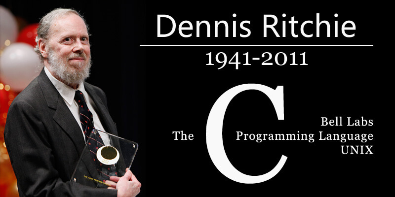

Dennis Ritchie: A founding father of Computer-Science.

Creator of the C programming language and key developer of Unix
The C programming language and its descendants continue to be used to write the software that makes digital devices and networks work, while UNIX and UNIX-like operating systems run on a vast range of computing systems. Ritchie's early work laid the foundations for much of the technical infrastructure of our modern digital world. He enjoyed traveling and reading, but his main passion was his work, and he stayed with Bell Labs until his retirement in 2007. With Ken Thompson, he was awarded the ACM Turing Award (1983), the US National Medal of Technology (1999), and the Japan Prize (2011). He passed away in 2011.